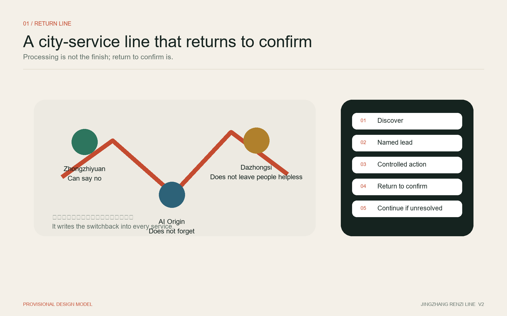
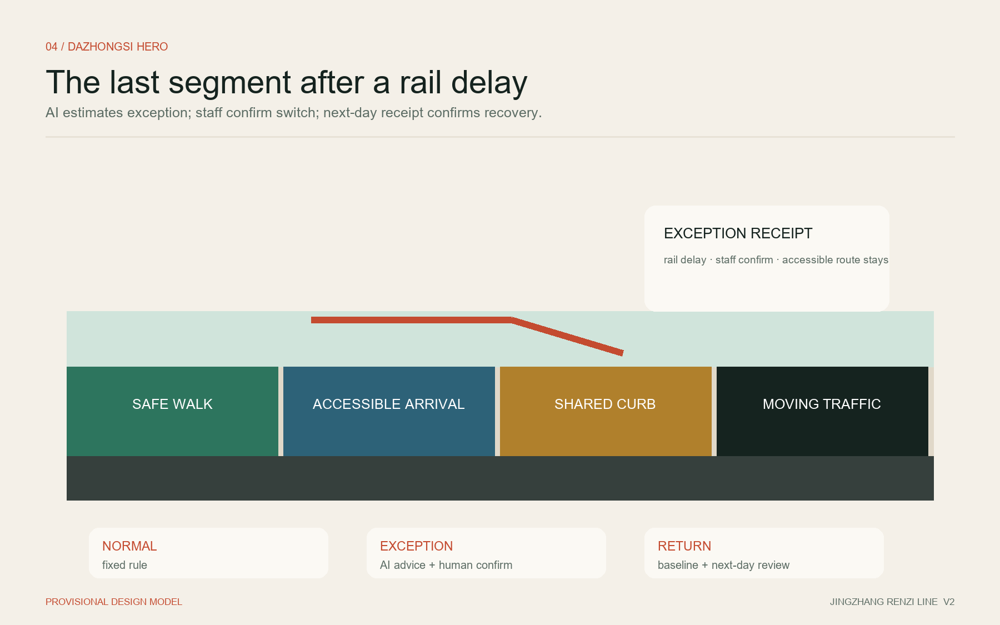

01 / REMEMBER
The system remembers
Every issue remains one traceable record. Recurrence never becomes a new performance number.
type · review date · recurrence
A city should not pay merely for putting an AI system online. It should pay when real tasks are completed safely, independently accepted, and sustained.
CONCEPTUAL EXPERIENCE IMAGE · NOT EXISTING SITE
The system remembers. A named operator returns. The public can reject a false “resolved” result. Publish responsibility and outcomes, not identities; let people understand and find the service before AI works in the background.
Every issue remains one traceable record. Recurrence never becomes a new performance number.
Each activation names one lead operator. Collaboration cannot blur who must respond and review.
An affected person can say “not yet” without restarting the complaint or proving it all again.
The “line” is a distributed trail of public service receipts, not a new road. Each zone closes its own operating loop. Two support wings provide contracts, standards, evaluation, migration, observation, and reversible prototyping.

Every zone can independently move from a real problem to responsibility, live operation, acceptance, and exit. Their difference is the flagship result the public can most readily remember.
Problem desk → shadow trial → independent evaluation → adopt, decline, or exit
Candidate pool → capacity pull → response closure → outcome closure → structural upgrade
Fixed rules first → AI assistance for exceptions → human confirmation → safe degradation
Fixed rules and human processes carry normal operation; AI begins in shadow mode. It enters limited live operation only after meeting pre-agreed thresholds for safety, task performance, workload, and cost.
First validate arrival, timeout release, exception recovery, and minimum accessible service on a clearly governed internal curb; only then seek lawful approval for public sites.
Detection is not dispatch. A formal task exists only after a named delivery unit accepts it; recurring problems escalate to structural causes.
AI advises without changing the field. Independent comparison with the human baseline produces paid adoption—or an evidenced decision not to adopt.
An independent and safe final segment for people with limited mobility.
Temporary routing for transit disruption, weather, and events.
Voluntary pull, public-interest capacity, and emergency safeguards.
Turn recurrence into prototypes for space, rules, and resources.
Show responsibility, progress, outcome, and recurrence in place.
Make success, failure, non-adoption, and stopping equally visible.
Three spatial metrics are reproducible from provisional package geometry. Operational indicators still require real baselines; target numbers and model accuracy do not substitute for field outcomes.

Each project passes through baseline, shadow mode, human confirmation, independent acceptance, and observation. “About 100 days” is a controlled-validation concept, not an official programme.
| Project | First action | Condition to expand | If it fails |
|---|---|---|---|
| P-01 | Controlled shared curb | Safety + task + load + access | Return to fixed rules |
| P-02 | Two-level street closure | Named owner + recurrence upgrade | Pause new signals |
| P-03 | Product shadow adoption | Independent review + portability | Do not adopt; exit |
| P-04 | Distributed service receipt | Timely + consistent + correctable | Paper / human substitute |
| P-05 | Three public landmarks | Site + heritage + fire + operations | No fixed structure |
| P-06 | Annual open validation week | No disruption to daily service | Reduce or cancel |
Reproducible is not official; displayable is not built; trial completion is not real adoption. Gaps remain visible in the evidence chain instead of being concealed by precise-looking drawings.